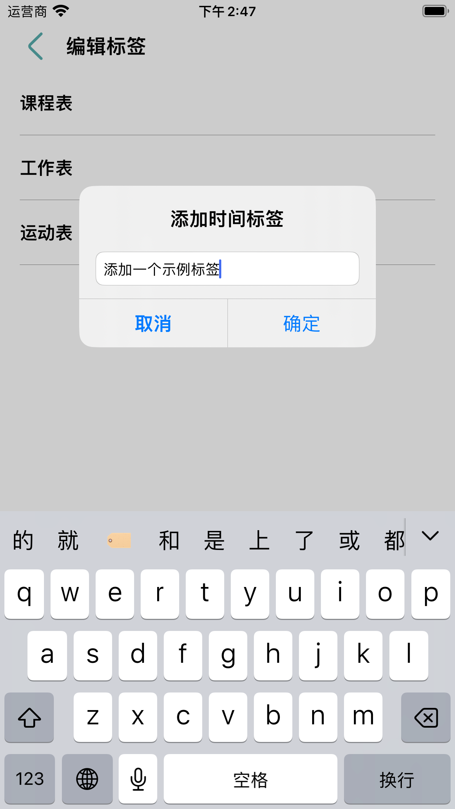
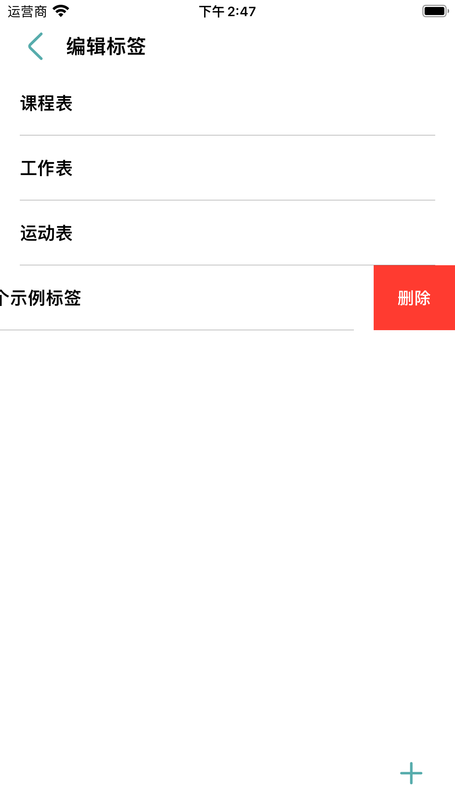
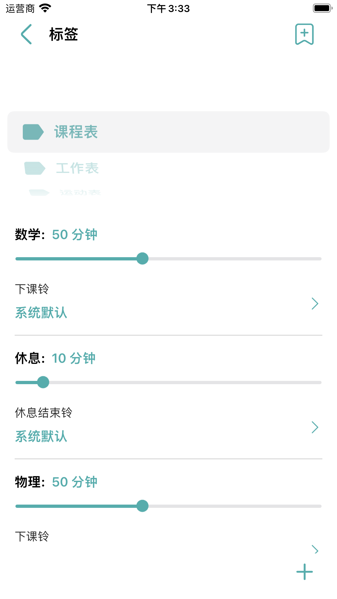
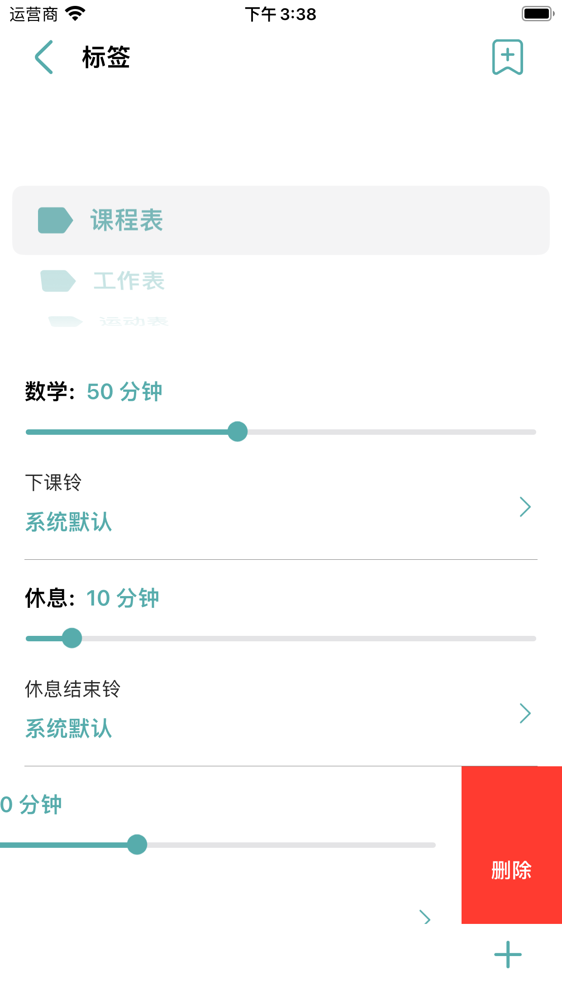
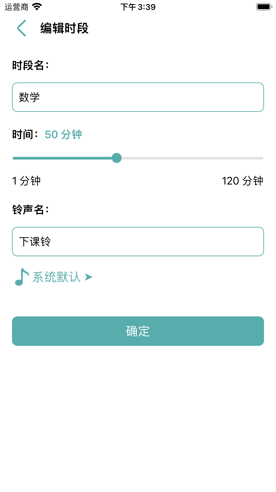
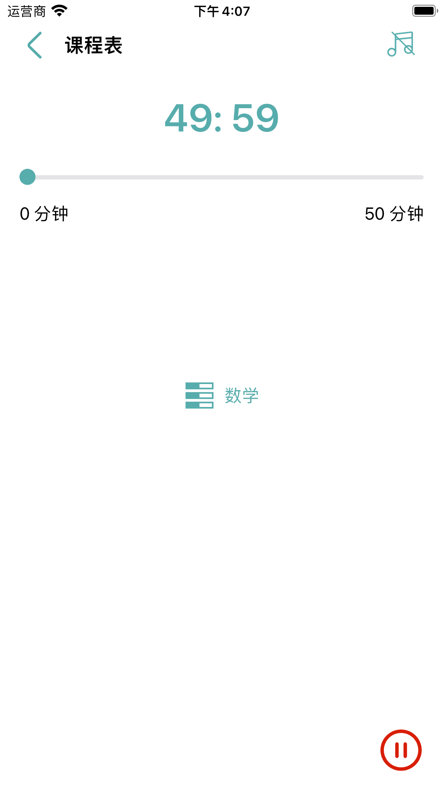

更新时间：2024年2月28日
“RC EST”是一款简单、方便、高效、且无广告的时间管理工具。 帮助用户抵制分心，专注于当下的事情，养成良好的习惯。 作为一款时间管理工具，”RC EST“有如下优势：
标签表示一类事情，通过设置不同的标签，例如学习、工作、锻炼等，来管理标签下的时间。 在标签页面，点击右上方的按钮，可以进入编辑标签页面，在这里可以自由的添加、删除自定义的标签：
 时段表示事件的一个步骤，标签管理着一系列的时段。 比如”课程表“就是一个标签，课程表下的数学、休息、物理就是时段：
在标签页中，左滑时段的条目可以删除时段，点击时段的条目可以编辑时段，点击右下角的按钮可以添加时段：
 在首页点击开始按钮，就进入开始页面，也标志这一个事件开始了。 在开始页面，点击右上方的按钮可以关闭、播放背景音乐； 点击中心的按钮，可以查看开始事件的时段列表； 点击右下方按钮，可以结束本次事件：
在首页点击右下方按钮，就进入设置页面。 在设置页面，您可以查看帮助文档、历史记录、隐私政策等； 还可以设置背景音乐、锁屏状态、语言等一系列操作。